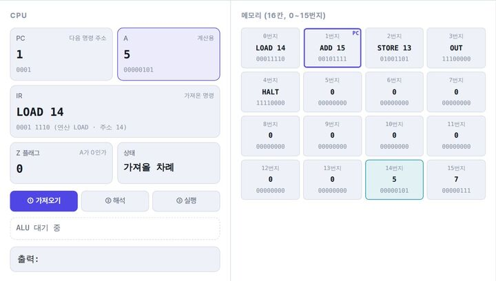
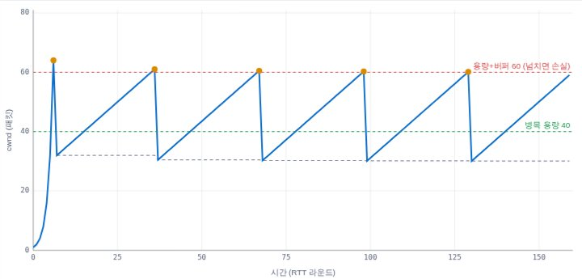
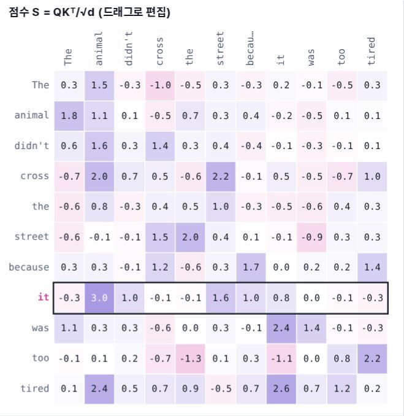
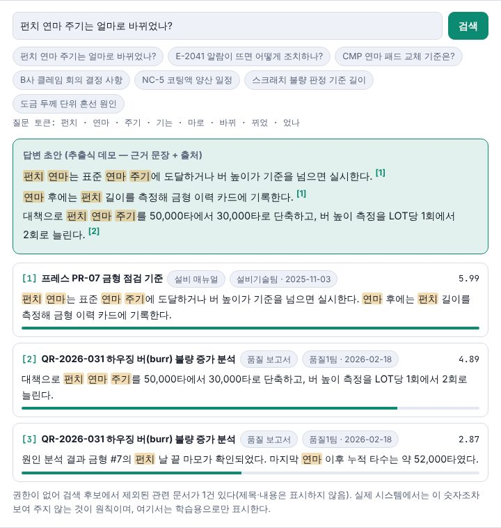
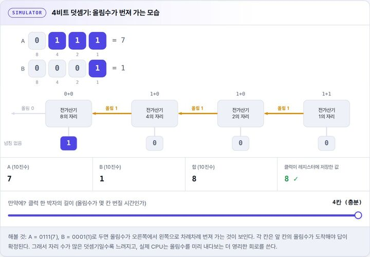
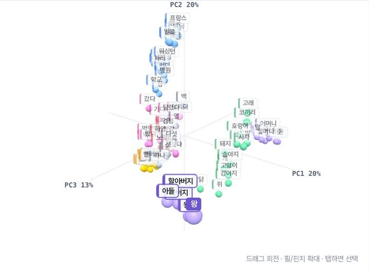
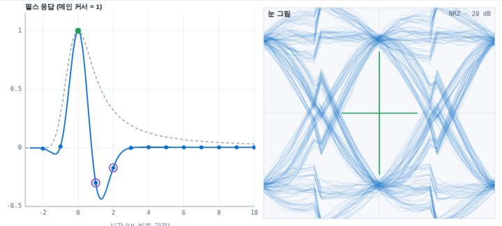
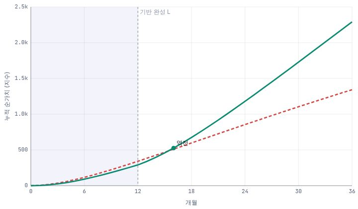

컴퓨터가 처음이라면
0과 1에서 출발해 CPU가 명령을 실행하는 원리까지 한 번에 봅니다.
장난감 CPU를 한 박자씩 돌리고, 패킷을 보내 혼잡 윈도우의 톱니를 보고, 어텐션 점수를 끌어 문장의 해석을 바꿔 봅니다. 컴퓨터 ComputerBook, 네트워크 NetworkBook, 인공지능 AIBook, 제조업 AI 전환 AXBook이 함께 꽂힌 서가입니다.
4권 공개컴퓨터 · 네트워크 · AI · AI 전환
조건에 맞는 책이 없습니다. 다른 검색어나 분야를 선택해 보세요.
질문 하나를 골라 시뮬레이터를 움직여 보세요. 각 실험은 해당 교과서의 그 장면으로 바로 이어집니다.

ComputerBook · 컴퓨터명령 하나는 CPU 안에서 어떤 단계로 실행될까?어셈블리를 직접 짜서 장난감 CPU를 한 사이클씩 돌려 봅니다.직접 돌려 보기 →
NetworkBook · 네트워크TCP는 네트워크가 붐비는지 모른 채 보낼 양을 어떻게 정할까?Tahoe·Reno·CUBIC이 손실을 만날 때마다 혼잡 윈도우를 줄였다 키우는 톱니를 라운드별로 봅니다.직접 돌려 보기 →
AIBook · AI어텐션 점수를 바꾸면 어떤 정보가 더 섞일까?어텐션 행렬의 점수를 끌어 바꾸며 문장의 해석이 어떻게 달라지는지 봅니다.직접 돌려 보기 →
AXBook · AI 전환사내 문서 검색에 AI를 붙이면, 왜 사람마다 다른 근거가 나와야 할까?가상의 사내 문서에서 근거 문단과 출처를 찾고, 역할을 바꿔 권한 필터가 검색 결과를 어떻게 바꾸는지 확인합니다.직접 돌려 보기 →
ComputerBook · 컴퓨터덧셈의 올림수는 논리 게이트를 어떻게 통과할까?4비트 덧셈기에서 올림수가 게이트 단위로 번져 가는 모습을 봅니다.직접 돌려 보기 →
AIBook · AI의미가 비슷한 단어는 공간에서 어떻게 배치될까?단어들이 모여 사는 3D 임베딩 공간을 돌려 봅니다.직접 돌려 보기 →
NetworkBook · 네트워크고속 신호가 배선에서 뭉개지면 칩은 어떻게 0과 1을 가려낼까?FFE·CTLE·DFE를 더할수록 펄스 응답의 꼬리가 지워지고 닫힌 눈이 열립니다.직접 돌려 보기 →
AXBook · AI 전환팀 목표를 모두 달성했는데 왜 리드타임은 줄지 않을까?팀 목표만 더한 조직과 공통 기반 목표를 가진 조직의 36개월 누적 가치를 교육용 예시 모델로 비교합니다.직접 돌려 보기 →처음이라면 ComputerBook으로 컴퓨터의 큰 그림을 보고, 궁금한 주제가 생기면 해당 교과서로 넘어가세요.
0과 1에서 출발해 CPU가 명령을 실행하는 원리까지 한 번에 봅니다.
내 컴퓨터 안의 여정에서 시작해 패킷이 계층을 지나 상대에게 닿는 길을 따라갑니다.
GPU의 병렬 연산과 AI 계산, 그리고 수천 대를 잇는 데이터센터 네트워크까지 봅니다.
글자가 벡터가 되고, 어텐션으로 섞이고, 한 토큰씩 생성되는 과정을 따라갑니다.
왜 지금 AX인지 짚고, 검색 증강 생성의 원리를 사내 지식 체계에 연결합니다.
과제를 고르고, 효과를 숫자로 재고, 단계별 로드맵으로 옮깁니다.